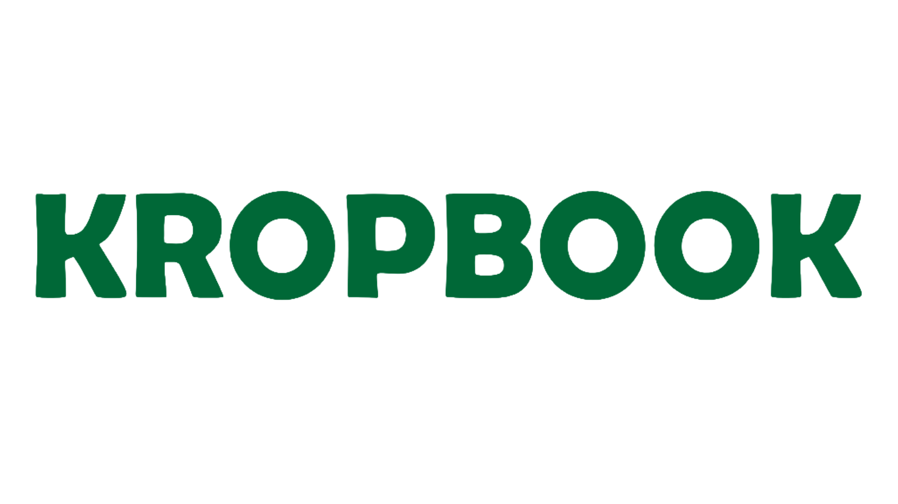

Revenue FY 2024–25
₹59.18 Cr
+112% YoY

Agritech Private Limited
Built in India. Designed for the Planet.
Every figure audited. Every number real.
The distinction matters enormously to how you value it.
Kropbook is the operating system of the agricultural economy — a layered infrastructure platform that creates data where none existed, builds the rails along which food and money move, and generates intelligence that neither farmers nor institutions have ever possessed.
Eight billion people depend on the global food system, yet every participant in that system — farmer, aggregator, processor, retailer — operates with incomplete information and misaligned incentives. No platform has ever attempted to resolve that at infrastructure depth.
Kropbook is building that layer. From India, where the problem is hardest.
But Kropbook operates at greater depth.
Data understanding for institutions that already possess data. Powerful analytics and decision intelligence — but built on data someone else created.
Creates the data, builds the rails, establishes the trust, generates the intelligence — across an economy that had none of these before.
"Every new farmer enriches the data. Every new buyer strengthens the rail. The gap widens every day."
Four interlocking layers that compound in value every day the platform operates.
The foundation no competitor can replicate overnight. Proprietary hardware at the farm gate captures soil chemistry, residue levels, and crop quality at the point of harvest — creating a primary data corpus that did not exist before.
End-to-end integration from farm aggregation through quality certification to institutional delivery. Kropbook holds the relationship with both ends of the supply chain simultaneously — a structural position that took six years to build.
Farmers without formal credit histories become financially visible for the first time. Kropbook's transaction history, delivery compliance records, and quality data create an entirely new class of agricultural credit infrastructure.
The data from three layers beneath — soil chemistry, transaction flows, quality certifications, compliance records — feeds the AgriOS intelligence platform. Policy intelligence. Global subscriptions. Insights no one else can produce.
Each of these would define a company. Kropbook has all three.
The United States Department of Defense challenged Kropbook's patent. Kropbook won. Scientific originality confirmed by international adjudication — the kind of validation that cannot be purchased, only earned.
Through a global pandemic, patent litigation, and market cycles — not a single year of contraction since founding in 2018. Compounding revenue growth is the most honest signal of genuine product-market fit.
ITC, Metro (Reliance), Annapurna (Adani), Zomato HyperPure, Swiggy. India's most demanding buyers chose Kropbook from inception — not as a pilot, but as a core supply chain partner.